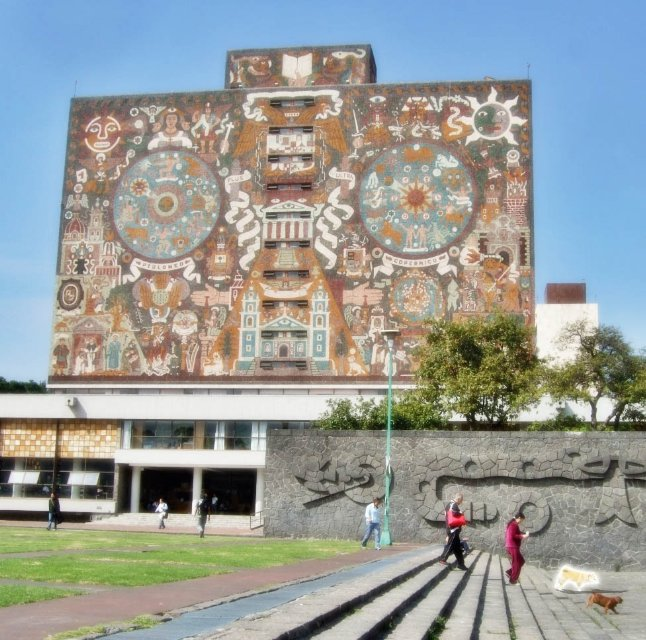
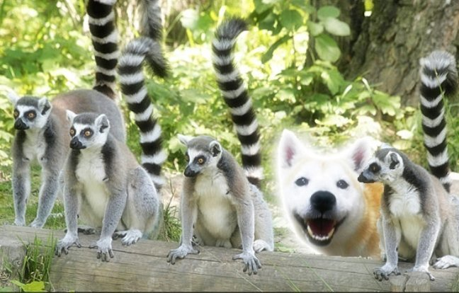
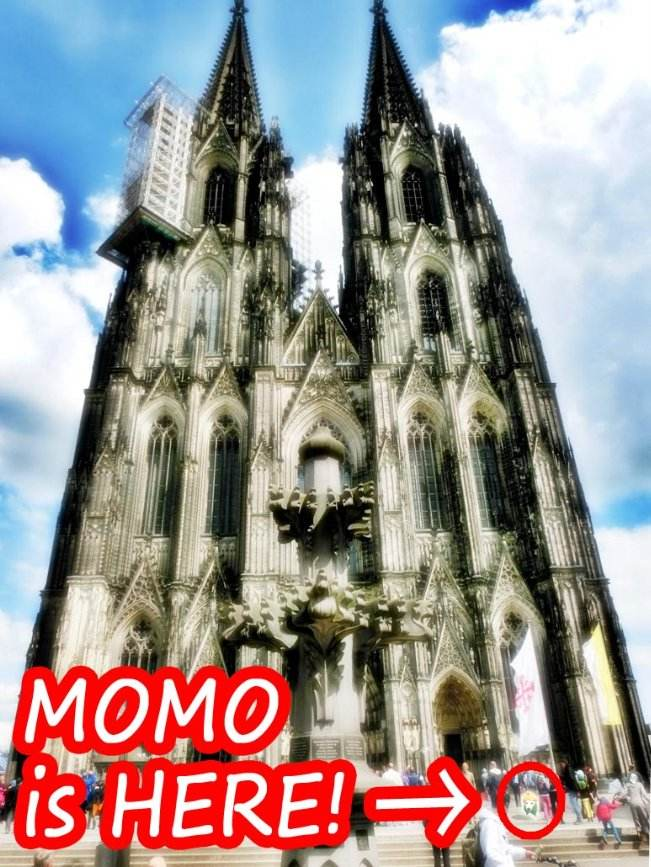

| モモの世界遺産旅行記: 世界編Vol.026-050 (The BBB: Breakthrough Bandwagon Books) | |
| モモ | |
| The BBB: Breakthrough Bandwagon Books (2015) | |
Momo Meets the World Heritage Sites: On the Globe Vol.026-050 ( Jp )
（邦題 : 『モモの世界遺産旅行記 : 世界編 Vol.026-050 』）
Written by Momo
Translated by Tanya
Cover p hoto by Momo
Cover design by Tanya
C opyright © 2015 Momo / The BBB : Breakthrough Bandwagon Books
All rights reserved.
ISBN: 978-1-329-58105-0
Momo's Achievemen ts to Date
Momo Meets the W orld Heritage Sites: On the Globe Vol.026-050
26. Ice Cave of Mutnovsky （ムトノフスキー火山の氷の洞窟）
ユーラシア大陸の西の端「ロカ岬（ポルトガル）」を出発したモモは、東の端の「デジニョフ岬（ロシア）」も訪問しました。
そして、ロシアの世界遺産「カムチャッカ火山群」の中でも火山活動が盛んなムトノフスキー山に、その氷の洞窟にやって来ました。
驚いたことに、この氷の洞窟は、灼熱の火山活動によって生み出されたものなのだそうです。
炎と氷の織り成す神秘的で幻想的な世界に、すっかりモモは魅了されました。
27. Eiffel Tower （エッフェル塔）
今日は、花の都パリの、有名なエッフェル塔にやって来ました。
以前、ターニャさんが連れて行ってくれた東京タワーのことを、モモは、よくおぼえています。
エッフェル塔の展望デッキから見下ろすパリの景色は息を飲む美しさで 、モモを夢中にさせました。
それから、セーヌ川のボートからパリの街並を楽しんだ後、モモは憧れのモナ・リザに会いに、ルーヴル美術館へ向かったのでした。
28. Samarkand - Crossroad of Cultures （文化交差路サマルカンド）
今日は、ウズベキスタンの世界文化遺産、「文化交差路サマルカンド（ Samarkand - Crossroad of Cultures ）」のグリ・アミール廟にやって来ました。
とても綺麗な青の景色は、「サマルカンド・ブルー」と呼ばれているそうです。
タイルやレンガの装飾の素晴らしさに、モモは感動しました。
霊廟に使われている美しい石は、ネフライトという名前だと教えてもらいました。
モモは、キラキラ光る石を見るのが大好きです。
29. Whale Sanctuary of El Vizcaino （エル・ビスカイノ鯨保護区）
今日はメキシコの世界遺産、「エル・ビスカイノ鯨保護区」にやって来ました。
サン・イグナシオ湖で犬かきでの泳ぎを楽しんでいた時、モモは、コククジラさんの一家に出逢いました。
とてもあたたかく迎えられて、水面から飛び上がるテクニックまで教えてもらえました。
お母さんクジラによると、尾ビレで水面を叩くのがコツなのだそうです。
モモは彼らのマネをしてみましたが、うまくできません。
「水面から飛び上がるのって、とっても大変！」
30. Angkor Wat （アンコール・ワット）
今日はカンボジアの世界遺産、アンコール・ワットにやって来ました。
現地ガイドの方によると、アンコール・ワットは日の出に、いちばん美しく見えるのだそうです。
モモは、いつも通り早朝４時に起きて、アンコール・ワットを観に行きました。
とても素敵なその姿を拝んだ後のお散歩は、最高でした。
31. Rice Terraces of the Philippine Cordilleras （コルディエーラ山脈の棚田群）

今日はフィリピンの世界遺産、「コルディエーラ山脈の棚田群」にやって来ました。
山の斜面には、お米の田んぼが階段のように連なっています。
現地の農家の方がモモにお米をくれたので、モモは、いくつかのおにぎりをつくりました。
とってもおいしかったので、思わず５個も平らげてしまいました。
すっかり満腹になったモモは、暖かい陽射しの中で、ウトウトとお昼寝をしてしまいました。
32. Historic Monuments and Sites in Kaesong （ 開城歴史遺跡地区 ）
今日は、朝鮮民主主義人民共和国の世界遺産、「開城歴史遺跡地区」にやって来ました。
開城瞻星台では、今から 1100 年も前に、お星様が観測されていたそうです。
モモの星座は、ターニャさんのおウチに初めて来た２月 22 日を記念して魚座なのだと、以前、ターニャさんに教えてもらいました。
どうして犬なのに魚なのかな、と、モモは不思議に思ったものです。
33. Cultural Landscape of Bali Province （バリの文化的景観）
今日は、インドネシアのバリ島にやって来ました。
このあたりの景色は、世界遺産に登録されているのだそうです。
バリの人々は、ヒンドゥー教の神様たちにとても感謝しているようです。
男の人たちが情熱的に合唱する「ケチャ」という歌も、神様たちに捧げられる音楽なのだそうです。
彼らの神様たちと自然の調和に取り囲まれて、モモは圧倒されてしまいました。
34. Sydney Opera House （シドニー・オペラハウス）
今日は、オーストラリアのシドニー・オペラハウスにやって来ました。
この建物の特徴的な屋根は、みかんの皮を剥いた時の状態からイメージされたそうです。
モモはみかんを食べるのは大好きですが、みかんの皮を剥くのは、とっても苦手です。
いつもは、ターニャさんか、ターニャさんのお母さんに剥いてもらって、食べています。
おいしいみかんを食べたくなって、モモは市場を散策しました。
35. Te Wahipounamu （テ・ワヒポウナム）
今日は、ニュージーランドの世界遺産、テ・ワヒポウナムにやって来ました。
フィヨルドランド国立公園の風景は、とても綺麗です。
現地のマオリ族の方たちから、彼らの言葉で「 Momo 」は「子孫」という意味で、たくさんの友達に恵まれる縁起の良い名前なのだそうです。
たくさんのお友達ができるといいな、とモモは思いました。
36. Port, Fortresses and Group of Monuments, Cartagena （カルタヘナの港、要塞、歴史的建造物群）
今日は、コロンビアの世界遺産、「カルタヘナの港、要塞、歴史的建造物群」にやって来ました。
このいかにも頑丈そうな要塞は、 400 年以上も前につくられたのだそうです。
どっしりとして揺らぎのない巨大な建物の姿は、モモを威圧する迫力です。
港町の歴史的雰囲気だけでなく、美しく広がる空とカリブ海の青さにも、とても感動しました。
37. Tikal National Park （ティカル国立公園）
今日は、グアテマラの世界遺産、ティカル国立公園にやって来ました。
公園内にある大きな神殿で、モモは虎に似た姿のジャガーという地元の神様の彫像と対面しました。
その姿は、かつて沖縄で会ったシーサーたちの姿をモモに思い出させるものです。
文化や習慣が違っていても、世界中で人々が自分たち の神様を大切にする気持ちは同じだな、とモモは実感しました。
38. National Autonomous University of Mexico （メキシコ国立自治大学）

今日はメキシコの世界遺産、「メキシコ国立自治大学」にやって来ました。
絵本を探しに校内の中央図書館を訪れた際、アステカ文明をモチーフに描かれた信じられないほど巨きな壁画に、モモは圧倒されました。
モモは、学校に通ったことがないので、なにか授業を受けてみたいと思いました。
でも、モモには難しいかな？
39. Statue of Liberty （自由の女神像）
今日は、アメリカ合衆国の世界遺産、自由の女神像にやって来ました。
展望デッキのひとつから、モモは眼下の絶景を見下ろしています。
彫像の王冠にある７つの突起は、７つの海と７つの大陸を表しているそうです。
もっと世界のことをよく知るために、この旅行を続けよう、とモモは改めて決意しました。
40. Dinosaur Provincial Park （ダイナソール州立公園）
今日は、カナダの世界遺産であるダイナソール州立公園、その敷地内にある、ロイヤル・ティレル古生物博物館にやって来ました。
フードゥーと呼ばれるキノコのような形をした岩や、ホースシーフ谷のとても険しい峡谷が印象的でした。
この地に住むネイティヴ・アメリカンのスー族は、かつてこの荒れ果てた土地をバッドランドと名づけたそうです。
このバッドランドでは、たくさんの恐竜の化石が発見されている、と聞きました。
ターニャさんは恐竜が大好きなのですが、モモは、ちょっぴり怖いです。
41. Glacier Bay National Park and Preserve （グレイシャーベイ国立公園）
今日は、アメリカ合衆国アラスカ州の世界遺産、グレイシャーベイ国立公園にやって来ました。
冷たい氷河の上を歩いている時、マウンテン・ゴートのやさしい男の子が、冷たい風からモモを守ってくれました。
その間に彼が話してくれたところによると、地球の気温上昇で、氷河がどんどん溶けているそうです。
モモは寒いのは苦手ですが、地球環境にとっては、それは必要であることを理解しました。
42. Jesuit Block and Estancias of C ó rdoba （コルドバのイエズス会伝道所とエスタンシア群）

今日は、アルゼンチン共和国の世界遺産、「コルドバのイエズス会伝道所とエスタンシア群」にやって来ました。
17 世紀に南米大陸に渡ってきたイエズス会の修道士たちは、このあたりを拠点に布教活動を行っていたそうです。
そう言えば、イエズス会の修道士たちは、 16 世紀には日本も訪れたそうです。
モモは、彼らの使命への情熱にとても感銘を受け、自分の旅のミッションはなんだろう、と首を傾げます。
43. Jesuit Missions （イエズス会の伝道所群）
アルゼンチン国内にあるイエズス会の伝道所を訪れた後、モモは南米大陸内の他のイエズス会伝道所を巡礼しました。
アルゼンチンとブラジルにまたがる 「グアラニーのイエズス会伝道所群」、
パラグアイの「ラ・サンティシマ・トリニダー・デ・パラナとヘスース・デ・タバランゲのイエズス会伝道所群」、
そして、ボリビアの「チキトスのイエズス会伝道所群」です。
これらの美しい場所はモモの心を掴み 、胸を揺さぶりました。
今後もできるだけ多くの世界遺産を訪れる旅行こそが自分のミッションだと、モモは自覚しました。
44. Cape Floral Region Protected Areas （ケープ植物区保護地域群）

今日は、南アフリカ共和国の世界遺産、「ケープ植物区保護地域群」にやって来ました。
この地域はアフリカ大陸の最南端の岬にあり、現地のアフリカーンス語ではフィンボスと呼ばれているそうです。
そこに咲き誇る美しい花に、モモは魅了されました。
鮮やかな赤い花におそるおそる花を近づけると、その心地良い薫りはモモをとても幸せな気分にしました。
45. Twyfelfontein （トゥウェイフルフォンテーン）
今日は、ナミビアの世界遺産、「トゥウェイフルフォンテーン」にやって来ました。
昔の人々の狩猟生活や宗教儀式だけでなく、たくさんの動物のお友だちが、岩の上に描かれています。
キリンさんや、ダチョウさん、ゾウさん、サイさんを見つけて、そのひとつひとつをモモは肉球で指差しました。
動物と人間たちは昔から良いお友だちであり続けてきました。
モモはその事実が嬉しく、そこに自分の姿も描かれているところを想像しました。
どう見えるかな？
46. Andringitra National Park （ アンドリンギトラ国立公園 ）

今日は、マダガスカル島のアンドリンギトラ国立公園にやって来ました。
この国立公園はマダガスカルの世界遺産、「アツィナナナの熱帯雨林」の構成資産のひとつとなっています。
モモが公園内を散歩していると、ワオキツネザルさんの兄弟姉妹が声をかけてくれて、森の中を案内してくれました。
「あなたたちの縞模様のシッポ、とってもカワイイ！」
そのかわいらしいシッポに魅せられてモモがホメると、ワオキツネザルの女の子が嬉しそうに微笑んでくれました。
47. Parthenon （パルテノン神殿）
今日はギリシャ、アテネのアクロポリスにあるパルテノン神殿にやって来ました。
現地の方の話によると、この建物は、ギリシャ神話の女神アテナを祀って紀元前５世紀に建てられたそうです。
自分たち犬のことも女神アテナは愛してくださるかな、と、モモは気になりました。
オリンピックは、このアテネの地で始まったのだそうです。
2020 年夏のオリンピックは、モモの故郷・東京で行われることを思うと、モモは日本で自分を待ってくれているターニャさんと、ターニャさんのお母さんのことが恋しくなりました。
48. Grand-Place of Brussels （ブリュッセルのグラン＝プラス）
今日は、ベルギーの世界遺産、「ブリュッセルのグラン＝プラス」にやって来ました。
この美しい広場には、たくさんのレストランやおみやげ屋さんが立ち並んでいて、とても賑やかな空気でした。
風景画を売っている露店商のおじさんによると、２年に１度、８月中旬に開催されるお祭りでは、広場全体が色とりどりのベゴニアで敷きつめられるそうです。
イベントの時の目を奪う景色から、このグラン＝プラスは、「世界でいちばん美しい広場」と言われているそうです。
ワッフルの良い匂いに誘われながら、モモは広場を散策したのでした。
49. Cologne Cathedral （ケルン大聖堂）

今日は、ドイツのケルン大聖堂にやって来ました。
ケルン大聖堂は、世界最大のゴシック様式教会で、ドイツでいちばん人気のある観光スポットでもあるようです。
大観衆の中でモモはその鋭い尖塔を見上げましたが、あまりにも背が高いので、ちょっと首が痛くなるほどでした。
ところで、ケルンはオーデコロン発祥の地で、フランス語の「オーデコロン」は「ケルンの水」という意味のようです。
オーデコロンは英語で「ケルンの水」という意味です。
モモは、香水が趣味のターニャさんに、おみやげを買って帰ろうと思いました。

50. Danube Delta （ドナウ・デルタ）
今日は、ルーマニアの世界遺産、ドナウ・デルタにやって来ました。
ドナウ・デルタ周辺でカヤックで生活している人たちから、ドナウ・デルタの敷地面積は約 5,165 平方 km で、東京の２倍以上も広いのだと教えてもらいました。
このエリアには、鳥さんやお魚さんの家族がたくさん住んでいます。
ホワイトペリカンの大家族がいっしょに飛び立つのを眺めていたら、モモは、空を自由に飛べる鳥さんたちが羨ましくなりました。
柴犬じゃなくて、柴鳥（シバード） だったら良かったのに......
（次巻へ続く）
This work was exclusively created as one of the made-in-Japan content belonging to The BBB: Breakthrough Bandwagon Books.